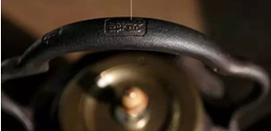
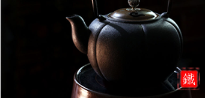
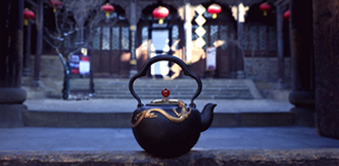
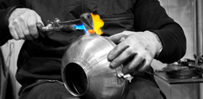
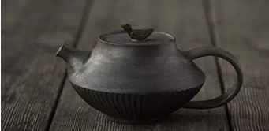

- 
-
铁壶的开壶方法
光影交错，铁壶铮铮。
2017-3-71.煮自来水。新壶洗净后，连续煮水3-5次，直到煮出来的水无杂质无异味即可。此种开壶方法适合爱好收藏和把玩的朋友。 用此法开壶，随着次数的累积，在壶内壁会形成摆摆的水垢，极有成就感
2.煮茶开壶。铁壶第一次使用，将普洱生茶放入铁壶内加水煮约10分,透明即可.此种开壶方法适合爱好收藏和把玩的朋友。 用此法开壶，随着次数的累积，在壶内壁会形成摆摆的水垢，极有成就感
- 
-
添工精铁，泉沸补艺
一眼泉，一壶茶，一块铁，一件养生之器
2017-3-7添——在生产过程中，添加了公司研制的对人体有益的微量元素配方，不但能改善铁质，还能在煮茶时补充至水，被人体吸收。
工——公司采用独有工艺处理铁壶内部，不似其他铁壶用漆或瓷覆盖铁壶内层使其美观、耐用，这
- 
-
依茶择壶，为一款茶找一把好壶来泡
以壶适茶，以茶养壶”相得益彰，找到壶与茶的最佳配合。
2017-3-7在选用茶壶时，要特别关注壶口的大小、壶身胎体的厚薄、容量的多少、壶身的高矮、壶把的舒适与否、壶盖是否便于取放等要素。从茶艺实践来看，造型简洁，壶把掌握便利，壶嘴出水顺畅有力，重量适度，投茶和清理渣都较为便利的造型多受茶艺师的青睐......
-
喝茶不懂茶器，就是士兵不带兵器
所谓“工欲善其事，必先利其器”。
2017-3-7是一种泡茶和斟茶用的带嘴器皿，目前使用较多的是紫砂陶壶或瓷器茶壶。以作承茶壶（以及茶杯）、接溢水、防烫手之用，可以简单到就是一只碟子，也可以繁复到是一件精美的工艺品。又称“三才碗”、“三才杯”，使用时既可以用来泡茶后分饮，也可一人一套，当作茶杯直接饮茶用。制
- 
-
制造工艺
在铁壶上采用高度镶嵌技法及雕刻，使铁壶更显豪华
2017-3-7透过历史的尘埃，不难窥见当时人们以家族和职业为中心在一起生活生产的史实。如此众多匠村的出现，标志着冶铸体系的完善和兴盛。千千万万的匠人，写就了风云跌宕的工匠传奇。铁府传承古冶铸技艺，让散落在大地的民间手艺人重新开始工艺的提升......
- 
-
铁壶的保养
铁壶的保养及好处问:你家铁壶是什么材质？
2017-3-7投入5-10g茶叶到壶内，加水7分满，煮开后小档煮15min，然后倒掉清洗内部，壶内加水7分满，建议使用自来水、井水或矿泉水，这样可以很快形成矿物质结晶体包浆，一壶水烧到剩下小半壶水的程度再加水再煮，一直煮水6壶左右就好了，防止铁壶生锈......